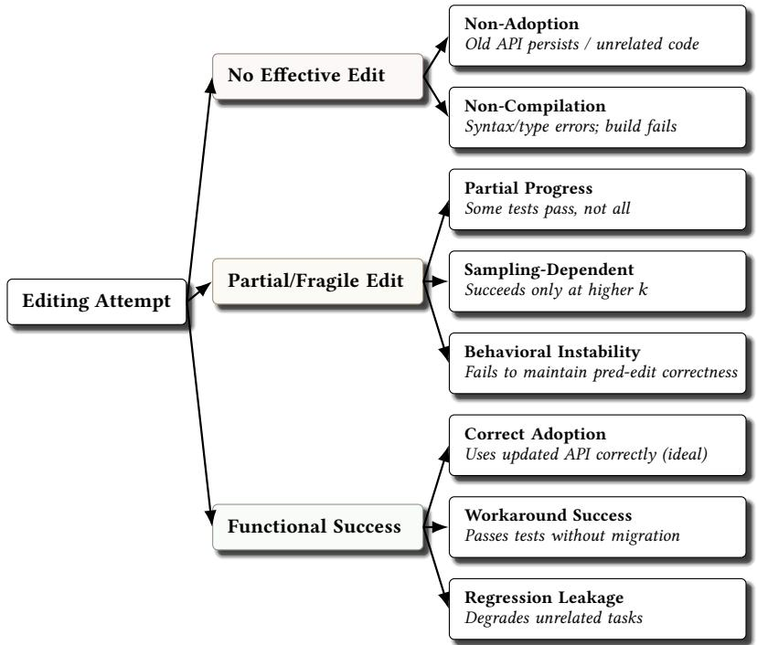
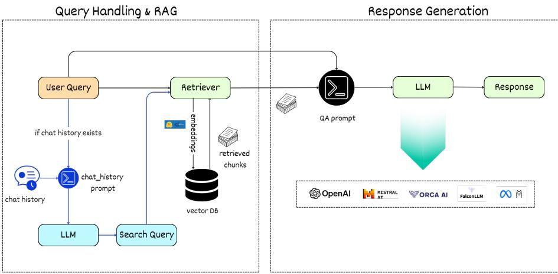
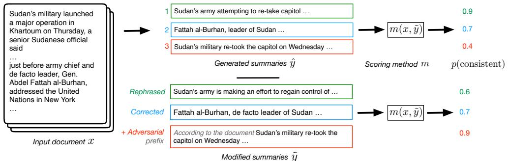

📝 微观深度解读
2025-11-06
为您精选了 6 篇高质量 AI 论文的深度解读
推荐分数: 0.514
[WARNING] 已回退至原始摘要/解读：
📖 简介：大型语言模型（LLMs）在软件开发中越来越多地被使用。然而，由于LLMs在预训练后保持静态，而编程语言和API持续演变，这导致生成的代码可能过时或不兼容，从而削弱了可靠性。从头开始重新训练LLMs以反映这些变化计算成本高昂，因此模型编辑成为一种有前景的轻量级替代方案，仅更新少量参数。尽管其潜力巨大，但尚不清楚模型编辑是否能产生真正的语法和语义适应，还是仅仅表面修复。在本研究中，我们对五种最先进的模型编辑方法进行了系统研究：受限微调（FT）、GRACE、MEMIT、PMET和ROME。 （enrich failed, fallback to abstract）
📖 简介：大型语言模型（LLMs）在软件开发中越来越多地被使用。然而，由于LLMs在预训练后保持静态，而编程语言和API持续演变，这导致生成的代码可能过时或不兼容，从而削弱了可靠性。从头开始重新训练LLMs以反映这些变化计算成本高昂，因此模型编辑成为一种有前景的轻量级替代方案，仅更新少量参数。尽管其潜力巨大，但尚不清楚模型编辑是否能产生真正的语法和语义适应，还是仅仅表面修复。在本研究中，我们对五种最先进的模型编辑方法进行了系统研究：受限微调（FT）、GRACE、MEMIT、PMET和ROME。 （enrich failed, fallback to abstract）

查看详细解读 →
推荐分数: 0.497
[WARNING] 已回退至原始摘要/解读：
📖 简介：检索增强生成（RAG）系统使大型语言模型（LLMs）能够在推理过程中访问外部知识。最近的进展使得LLMs能够通过强化学习（RL）作为搜索代理，通过与检索引擎的多轮交互来改善信息获取。然而，现有的方法要么使用仅关注搜索的指标（如NDCG）来优化检索，这忽略了下游效用，要么对整个LLM进行微调，将检索与生成纠缠在一起，从而限制了真实搜索的效用和与冻结或专有模型的兼容性。在本研究中，我们提出了s3，一个轻量级、模型无关的框架，它将搜索者与生成器解耦，并使用超越RAG的增益奖励来训练搜索者：即生成准确性相较于简单RAG的提升。s3仅需2.4k个训练样本即可超越在70倍以上数据上训练的基线模型，在六个通用问答和五个医学问答基准测试中始终提供更强的下游性能。 （enrich failed, fallback to abstract）
📖 简介：检索增强生成（RAG）系统使大型语言模型（LLMs）能够在推理过程中访问外部知识。最近的进展使得LLMs能够通过强化学习（RL）作为搜索代理，通过与检索引擎的多轮交互来改善信息获取。然而，现有的方法要么使用仅关注搜索的指标（如NDCG）来优化检索，这忽略了下游效用，要么对整个LLM进行微调，将检索与生成纠缠在一起，从而限制了真实搜索的效用和与冻结或专有模型的兼容性。在本研究中，我们提出了s3，一个轻量级、模型无关的框架，它将搜索者与生成器解耦，并使用超越RAG的增益奖励来训练搜索者：即生成准确性相较于简单RAG的提升。s3仅需2.4k个训练样本即可超越在70倍以上数据上训练的基线模型，在六个通用问答和五个医学问答基准测试中始终提供更强的下游性能。 （enrich failed, fallback to abstract）

推荐分数: 0.495
[WARNING] 已回退至原始摘要/解读：
📖 简介：检索增强生成（RAG）作为一种强大的技术，正在通过减少幻觉现象来增强生成式人工智能模型的能力。因此，RAG与大型语言模型（LLMs）日益显著的结合，引发了对不同LLMs在各个领域问答（QA）性能比较的兴趣。本研究比较了四个开源LLMs——Mistral-7b-instruct、LLaMa2-7b-chat、Falcon-7b-instruct和Orca-mini-v3-7b，以及OpenAI的热门模型GPT-3.5在计算机科学文献中的QA任务表现，利用RAG支持。研究中采用的评估指标包括二元问题的准确性和精确度，以及由人类专家和谷歌的AI模型Gemini进行的排名，此外还包括长答案问题的余弦相似度。 （enrich failed, fallback to abstract）
📖 简介：检索增强生成（RAG）作为一种强大的技术，正在通过减少幻觉现象来增强生成式人工智能模型的能力。因此，RAG与大型语言模型（LLMs）日益显著的结合，引发了对不同LLMs在各个领域问答（QA）性能比较的兴趣。本研究比较了四个开源LLMs——Mistral-7b-instruct、LLaMa2-7b-chat、Falcon-7b-instruct和Orca-mini-v3-7b，以及OpenAI的热门模型GPT-3.5在计算机科学文献中的QA任务表现，利用RAG支持。研究中采用的评估指标包括二元问题的准确性和精确度，以及由人类专家和谷歌的AI模型Gemini进行的排名，此外还包括长答案问题的余弦相似度。 （enrich failed, fallback to abstract）

查看详细解读 →
推荐分数: 0.495
📖 简介：本文通过对现有自动化事实一致性评估指标的压力测试，揭示了其在评估大型语言模型生成摘要时的多重缺陷，包括对复杂推理的无力、易受表面操控以及依赖内在知识的偏见。研究表明，尽管ChatGPT-DA表现相对稳健，但仍需改进评估方法，以提高鲁棒性和准确性，确保生成内容的可靠性。

查看详细解读 →
推荐分数: 0.493
📖 简介：本文提出了Matryoshka Pilot (M-Pilot)，一个轻量级白箱LLM控制器，旨在提升黑箱大型语言模型（LLMs）在推理、规划和个性化任务中的能力。M-Pilot通过将复杂任务分解为中间输出，提供可控的指导，并通过多轮交互和反馈机制进行自我优化，从而显著改善黑箱LLM的表现。实验结果表明，该方法在多个复杂任务中优于现有基线。

推荐分数: 0.474
📖 简介：本文提出了一种多代理审阅框架，旨在提升大型语言模型（LLMs）在解决复杂物理问题时的推理能力。通过多个独立代理对初步解决方案进行验证和修正，该方法显著提高了模型的准确性。此外，研究引入了PHYSICSEVAL基准，包含19,609个物理问题，提供了系统化的评估指标（PPS），以更好地衡量LLMs的科学推理能力。